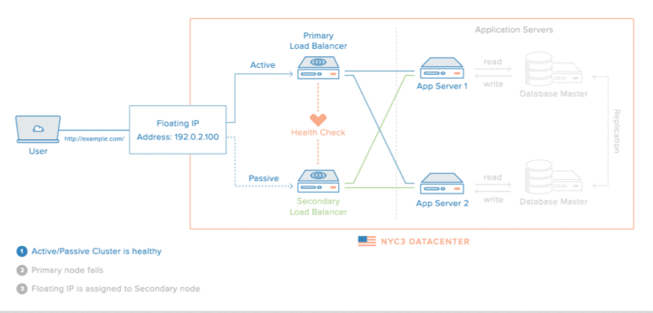

1. 负载均衡是在说一件什么事情？
下图引用自知乎：什么是负载均衡？，很好地说明了负载均衡是一件什么事情：

取自 WiKi：
负载平衡（Load balancing）是一种电子计算机技术，用来在多个计算机（计算机集群）、网络连接、CPU、磁盘驱动器或其他资源中分配负载，以达到优化资源使用、最大化吞吐率、最小化响应时间、同时避免过载的目的。 使用带有负载平衡的多个服务器组件，取代单一的组件，可以通过冗余提高可靠性。负载平衡服务通常是由专用软件和硬件来完成。 主要作用是将大量作业合理地分摊到多个操作单元上进行执行，用于解决互联网架构中的高并发和高可用的问题。
但是，我们该如何设计负载均衡接口呢？
2. 设计一个负载均衡算法接口
在编程过程中，一个好的抽象能够极大地替我们简化问题。关于负载均衡算法，最好的方式就是遵循函数式编程范例，不持有任何状态，输出仅仅与输入有关：
- 输入：一个 Server List ，即一个能够提供当前 RPC 请求对应服务的服务器列表；
- 输出：一个服务器地址，该服务器将处理此次请求；
因此，我们可以将负载均衡算法抽象为如下的接口（in Java）：
1
2
3
4
|
public interface LoadBalance {
//String 对应于能够提供服务的服务器地址
String getServerAddress(RpcRequest request, List<ServiceInfo> serverList);
}
|
常见的负载均衡算法有：
- 随机（包括简单随机以及权重随机）；
- 轮询（包括均等轮询以及权重轮询）；
- 最少调用数优先，相同活跃数则随机；
- 一致性 Hash，相同类型的请求总是会发送到同一个提供者上；
负载均衡算法的优缺点可以参考 Dubbo2.7 用户文档-成熟度：
| 负载均衡算法 |
缺点 |
| 权重随机 |
在一个截面上碰撞的概率高，重试时，可能出现瞬间压力不均 |
| 轮询 |
存在慢的机器累积请求问题，极端情况可能产生雪崩 |
| 最少活跃调用数 |
不支持权重，在容量规划时，不能通过权重把压力导向一台机器压测容量 |
| 一致性 Hash |
压力分摊不均 |
下面我们依次实现上述负载均衡算法。
3. 具体负载均衡算法实现
每一个服务提供方在注册中心对于其服务的每一个服务都可以在 Java 堆中抽象为如下的类：
1
2
3
4
5
6
7
8
|
public class ServiceInfo {
private String address;
//-1 代表没有权重设置
private int weight;
//-1 代表没有连接数的数据
private int invokeNumber;
//省略其构造器、setter/getter 方法
}
|
3.1 简单随机
简单随机策略意味着每一个服务提供者有着相等的概率被选中，这种方式实现策略简单。但是，如果 Provider 性能有所差异，那么性能好的机器与性能差的机器处理同理的请求，并不是一件明智的决定。
代码更能有说明能力，简单随机负载均衡器代码如下：
1
2
3
4
5
6
7
8
9
10
11
12
13
14
15
16
17
18
19
|
public class RandomLoadBalance implements LoadBalance {
private Random random;
public RandomLoadBalance() {
random = new Random();
}
@Override
public String getServerAddress(RpcRequest rpcRequest, List<ServiceInfo> serverList) {
//首先，确定随机整数的最大值
int max = serverList.size();
//在 0 - size-1 返回内进行随机
int index = random.nextInt(max);//返回 [0,max)返回内的一个整数，左闭右开
//返回服务器地址
return serverList.get(index).getAddress();
}
}
|
3.2 权重随机
权重随机中，每一个服务提供者虽然具有权重的被随机选择。高数老师告诉我们，在大数定理下，权重将最终决定每一个 Provider 被选择的个数。例如，Consumer 有 1000 次调用，服务提供方分别的权重为 [1,2,3,4]，那么最终提供方被选择的次数大致为 100、200、300、400 次。
代码更能有说明能力，权重随机负载均衡器代码如下：
1
2
3
4
5
6
7
8
9
10
11
12
13
14
15
16
17
18
19
20
21
22
23
24
25
26
27
28
29
30
31
|
public class WeightRandomLoadBalance implements LoadBalance {
private Random random;
public WeightRandomLoadBalance() {
random = new Random();
}
@Override
public String getServerAddress(RpcRequest rpcRequest, List<ServiceInfo> serverList) {
int sum = 0;
int[] weightArray = new int[serverList.size()];
//遍历 serverList，计算权重和，并初始化 weightArray 数组
for (int i = 0; i < serverList.size(); i++) {
int weight = serverList.get(i).getWeight();
weightArray[i] = weight;
sum += weight;
}
//首先在 [0,sum) 范围内进行随机数的计算
int rad = random.nextInt(sum);
int cur_total = 0;
for (int i = weightArray.length - 1; i >= 0; i--) {
cur_total += weightArray[i];
if (cur_total > rad) {
return serverList.get(i).getAddress();
}
}
return serverList.get(0).getAddress();
}
}
|
3.3 轮询
轮询策略是所有负载均衡策略中唯一一个反函数式编程思想的负载均衡器，因为为了确保轮询，需要额外的保存状态，因此引入了额外的线程不安全性。
代码更能有说明能力，轮询式负载均衡器代码如下：
1
2
3
4
5
6
7
8
9
10
11
12
13
14
15
16
17
18
19
20
21
22
23
24
25
26
27
28
29
30
31
|
public class RoundRobinLoadBalance implements LoadBalance {
//为每一个 RPC 的服务名创建一个轮询的索引计数
//key 服务名，value 轮询所用的索引
final Map<String, AtomicInteger> roundRobinMap = new HashMap<>();
//注意线程安全性！！！！
@Override
public String getServerAddress(RpcRequest rpcRequest, List<ServiceInfo> serverList) {
//得到轮询索引
AtomicInteger index = roundRobinMap.get(rpcRequest.getInterfaceName());
//进行 double check 式的空值初始化
if (index == null) {
synchronized (roundRobinMap) {
if (roundRobinMap.get(rpcRequest.getInterfaceName())==null) {
index = new AtomicInteger(-1);
roundRobinMap.put(rpcRequest.getInterfaceName(), index);
}
}
}
//进行取余操作
int serverListIndex = Math.abs(index.incrementAndGet() % serverList.size());
//返回地址
return serverList.get(serverListIndex).getAddress();
/**
* 注意，虽然 AtomicInteger 会有溢出的危险，但是当 AtomicInteger 达到最大值以后，
* 并不会继续增大，而是会转换为 -2147483648，因此，只要进行取取余后的值进行取绝对值，就符合本轮询的使用方式（取余无所谓从整数变为负数）
*/
}
}
|
3.4 一致性 Hash
一致性 Hash 比简单 Hash 提供了在增减 Provider 时的稳定性，具体算法思想网上有非常多，这里不再赘述。
一致性 Hash 负载均衡算法大致上分为两个步骤：
- 将多个服务提供方抽象为 Hash 环上的节点；
- 将 Consumer 的请求匹配到合适的服务提供方列表，然后将请求映射为 Hash 数，然后打在 Hash 环上，确定服务提供方地址；
Hash 环为何可以使用 SortedMap 来实现，是一致性 Hash 算法的难点之一。下图来自于：https://segmentfault.com/a/1190000021199728，很好地说明它们之间的联系。

一致性 Hash 算法负载均衡器的代码如下所示：
1
2
3
4
5
6
7
8
9
10
11
12
13
14
15
16
17
18
19
20
21
22
23
24
25
26
27
28
29
30
31
32
33
34
35
36
37
38
39
40
41
42
43
44
45
46
47
48
49
50
51
52
53
54
55
56
57
58
59
60
61
|
public class ConsistentHashLoadBalance implements LoadBalance {
@Override
public String getServerAddress(RpcRequest rpcRequest, List<ServiceInfo> serverList) {
//从入口参数 List<ServiceInfo> serverList 处进行构造 Hash 环
SortedMap<Integer, String> sortedMap = new TreeMap<>();
/**
* 利用 serverList 来构造 Hash 环:
* 不过事实上并没有单独的 Hash 环作为数据结构，
* Hash 环的存在重在我们如何来看待 SortedMap<Integer, String> 这一个数据结构
* 把 Hash 环拉直，就是一个 key 为 hash，value 为服务器地址的有序的 HashMap(SortedMap)
* 可以参考 URL:https://segmentfault.com/a/1190000021199728
*/
for (int i = serverList.size() - 1; i >= 0; i--) {
int hash = getHash(serverList.get(i).getAddress());
sortedMap.put(hash,serverList.get(i).getAddress());
}
/**
* 首先，我们利用 rpcRequest 请求的服务名进行 Hash 运算
* 服务名是 接口名 还是 接口名+方法名 取决于 Provider 在服务注册中心的服务注册粒度，这里就仅仅以接口
*/
//1.得到请求的 hash
int hashOfRequest = getHash(rpcRequest.getInterfaceName());
//2.得到大于 hashOfRequest 的所有 Map
SortedMap<Integer,String> subMap = sortedMap.tailMap(hashOfRequest);
if (subMap.isEmpty()) {
//如果没有比该key的hash值大的，则从第一个node开始
Integer i = sortedMap.firstKey();
//返回对应的服务器
return sortedMap.get(i);
} else {
//第一个Key就是顺时针过去离node最近的那个结点
Integer i = subMap.firstKey();
//返回对应的服务器
return subMap.get(i);
}
}
//一个基于 FNV1_32_HASH 的 Hash 算法，用于计算服务名的 hash 值
private static int getHash(String str) {
final int p = 16777619;
int hash = (int) 2166136261L;
for (int i = 0; i < str.length(); i++)
hash = (hash ^ str.charAt(i)) * p;
hash += hash << 13;
hash ^= hash >> 7;
hash += hash << 3;
hash ^= hash >> 17;
hash += hash << 5;
// 如果算出来的值为负数则取其绝对值
if (hash < 0)
hash = Math.abs(hash);
return hash;
}
}
|
3.5 最少调用数负载均衡器
最少调用数是最值得考虑的负载均衡设计，因为其存在很大的性能问题。
最少调用数算法看起来很完美（似乎是最优解），但是也存在隐患：如果客户端在一个时间段的请求数激增，快到服务端都来不及将调用数异步更新到注册中心（或者类似的分布式组件上）。那么可能会导致原本最少调用数的服务器上的调用数激增，甚至超过原本最高调用数的服务器。
4. 将负载均衡器融入到现有 RPC 框架中
现有的 RPC 框架的地址为：https://github.com/Spongecaptain/RPCFramework，原本的框架设计中是没有负载均衡器的，新的组件融入旧框架是一个重大的问题。
下面按照不同组件来说明一下上述问题的解决方案。
4.1 修改 ZooKeeper 注册中心的使用方式
ZooKeeper 服务中心如下图所示：

我将上述注册中心模型进行简化（我们没有必要如此复杂），将 consumers 节点去除，便是我们的 ZooKeeper 使用策略。
在根节点 /rpc 下的每一个节点都是服务节点：
- 节点的 path：一个接口的完全限定名，例如图中的 cool.spongecaptain.Foo 接口；
- 服务节点的子节点 path：能够提供此接口的服务的服务器地址，例如 localhost:2222，其 value 对应于服务权重（当其 value 为 -1 时，意味着我们不对权重值进行设计）。
另一方面，伴随着注册中心的使用策略修改，框架中的服务注册（registry）/服务发现（ServiceDiscovery）组件也需要进行修改。
4.2 重新设计 NettyRpcClient 类
NettyRpcClient 类现如今发出一个 RPC 调用分为 3 步：
- 利用服务发现组件，为当前请求匹配一个服务器地址列表；
- 利用负载均衡组件，为当前请求确定一个服务器地址；
- 发出请求；
负载均衡为新添加的一个步骤。